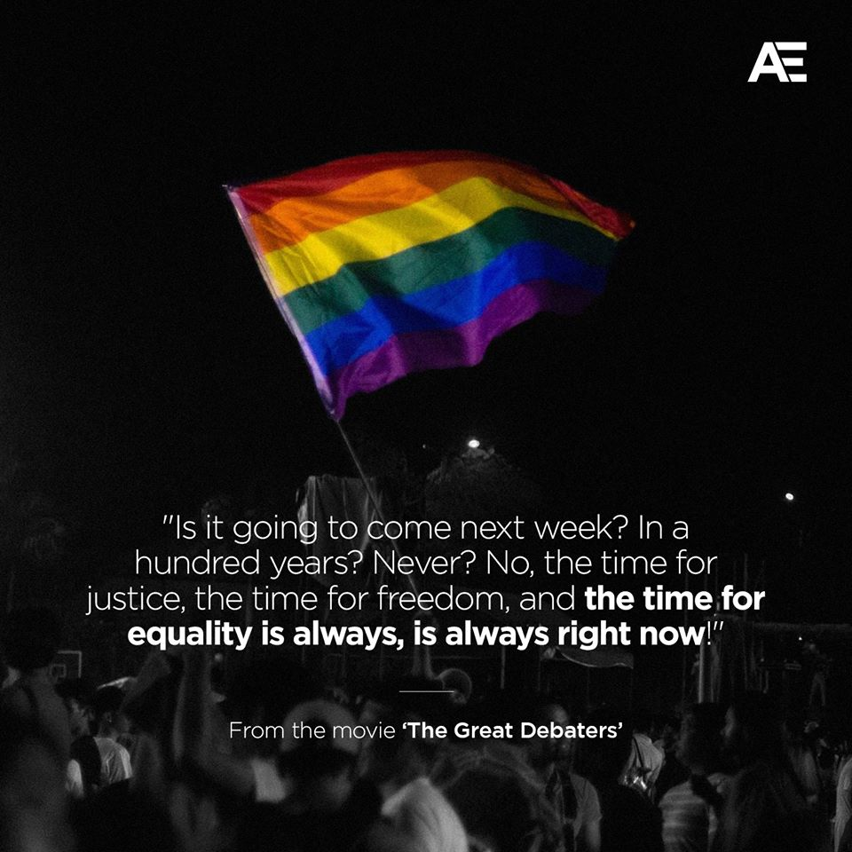
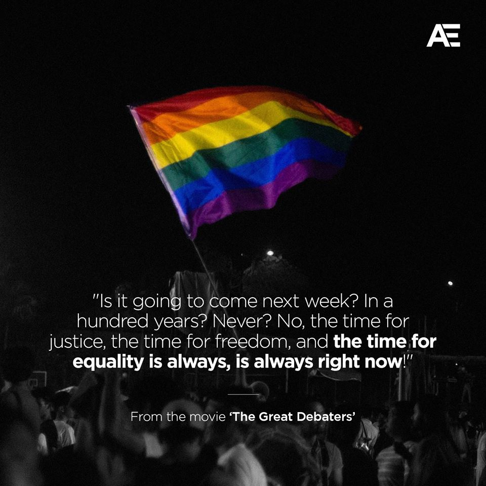
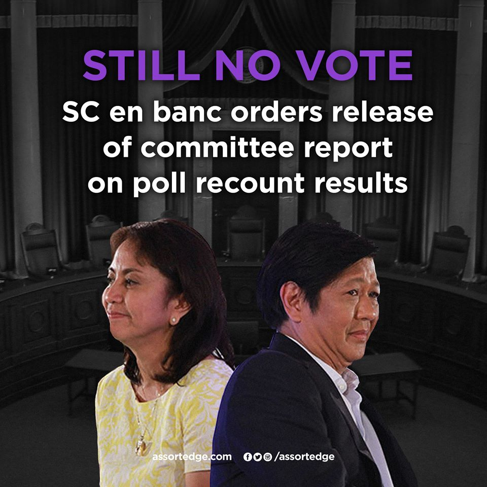
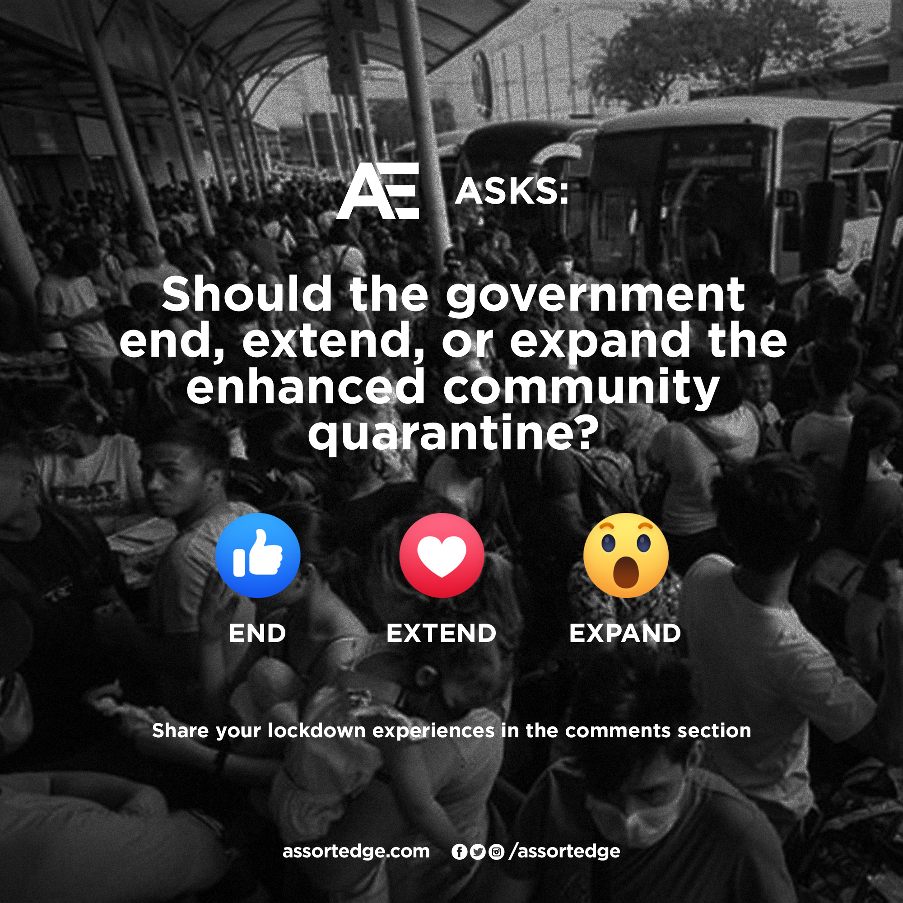
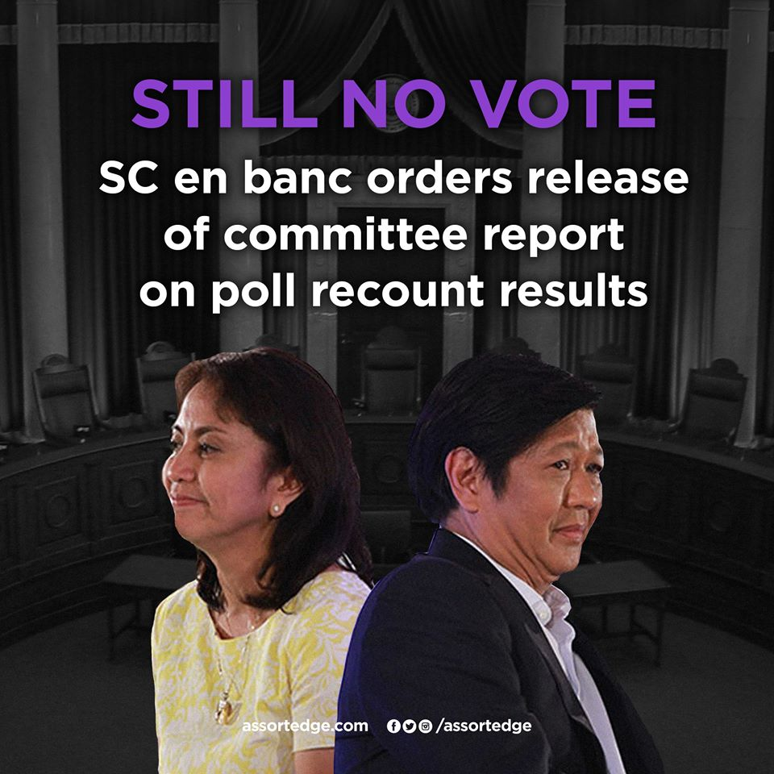
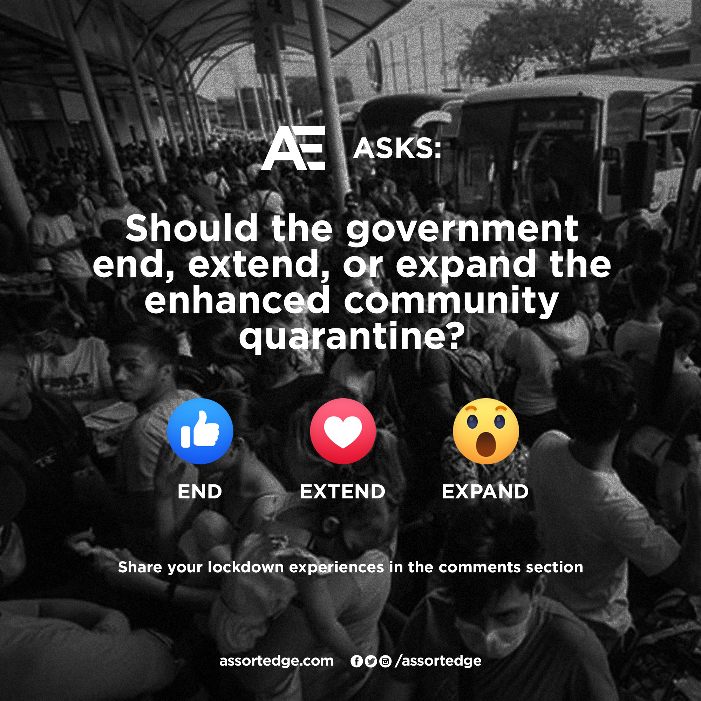

Assortedge
2017
I am part of Assortedge (as Chief Video Editor, formerly on layout duties) and I have made several pubs under the said organization. You can access the full primers and pubs in the social media profiles of Assortedge (@Assortedge).
This work features some images and texts not created/produced by XFDSN.
Category
Pubmats
Client
Assortedge (as part of)
 
 
